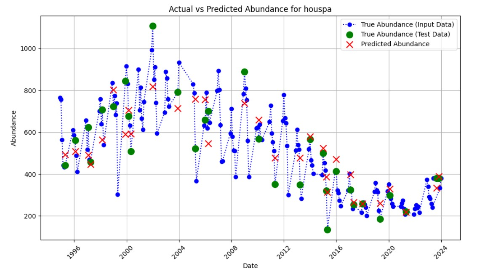
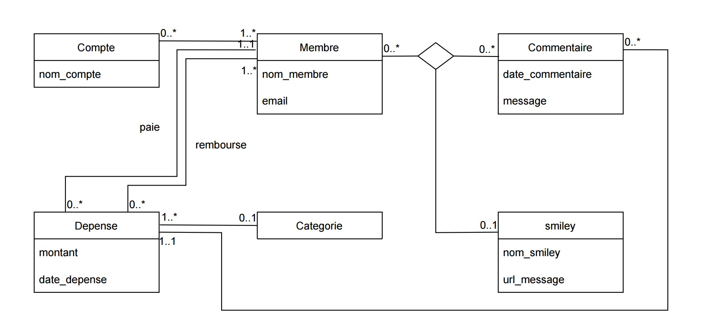
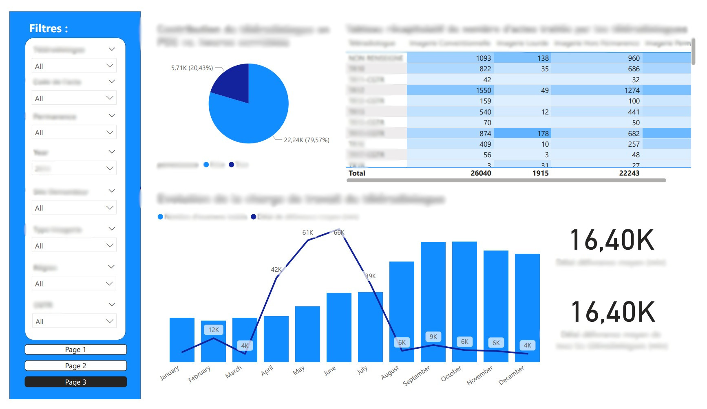
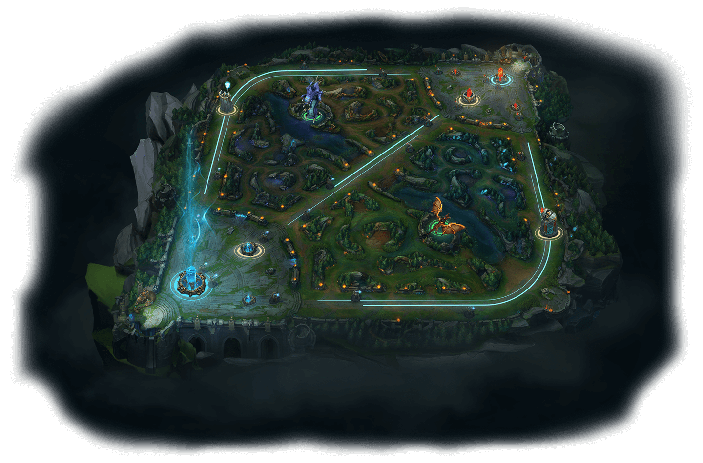

Hello, I'm Sam. I'm passionate about data science,
climate modeling, and environmental issues. Explore my projects and
learn more about my skills below.
Who I Am
I'm a data science student, specialized in remote sensing,
climate modelling and interested in environmental issues such as tackling
global warming, adaptation to climate risks and protecting the biosphere.
Coding
Proficient in Python for data science, working with libraries such as pandas,
matplotlib, seaborn, numpy, pyspark.
Familiar with other popular languages and experienced with Git.
Geoanalytics
Specialized in geospatial data analysis using QGIS, mastering both raster and
vector data. Able to process them through Python and the associated libraries.
Creativity
I enjoy creating appealing visuals through data visualization like graphs and maps,
dashboards, PowerPoint presentations and even for this website.
Business Understanding
Using state-of-the-art machine learning techniques is useless if you don't
identify the real problem, that's why I always make sure to determine it.
Machine Learning
Deep understanding of the best machine learning models and methods.
Able to efficiently implement them in Python with libraries like Scikit-Learn and PyTorch.
Mathematics
Coming from a demanding scientific education, I master statistics, probability and
linear algebra, which are crucial in my expertise fields.
Physics and Modelling
I appreciate modelling all kind of physical phenomenas. In my case they are related to
the environment and its observation like climatology and telecommunications.
Project Management
Through all my projects and experiences, I learnt the methods and tools
that secure a good work, made in time with a team of diverse profiles.
Education & Experiences
After 2 years in preparatory classes, I entered IMT Atlantique, a top French engineering school.
Before my last year of studies, I went in a gap year to do internships.
I'm currently doing my final internship at Hygeos before graduating.
I studied remote sensing and data science, where I gained a deep understanding
of climate modeling and monitoring, data analysis and environmental issues.
Universidad Carlos III - Data Science and Aerospace Engineering (2023)
I took lectures in machine and deep learning, modeling
and discovered aerospace engineering.
ONERA - SAR Image Database internship (2023)
Automation of Synthetic Aperture Radar images labeling using geoanalytics
and numerical image processing techniques.
Studied models to predict climate hazards according to global warming scenarios.
Prototyped a tool to detect hail in France.
Milliman - Climate Modeling Internship (2024)
Worked on methods to accurately assess portfolio loss caused by floods
and improve the hazard modeling with open data.
Hygeos - Machine Learning for Meteorology Internship (2025)
Implementing state of the art deep learning model for cloud nowcasting
using satellite imagery.
Projects
Here you can see in details all the projects I realised during my studies and my personal time.
Website Development
Learned HTML, CSS, and JavaScript to develop this portfolio website.
Bird Detection App
Built an app combining deep learning and user-friendly interface to detect bird species.
Pacman AI
Developed an AI to beat the Pacman game.
Antenna Control System
Prototyped automatic pointing system for a nanosatellite antenna.
Autonomous Arduino Car
Designed a small autonomous car that detects obstacles and maneuvers around them.
PyRat Challenge
Solved optimization and graph theory problems in a pathfinding challenge.
Offshore windfarms and vessel traffic
Thorough data analysis to assess how wind farms impact ship trajectories.
Atmospheric pollutions and birds
Studied the impact of air pollution on avifauna in the US.
SQL Database
Developed an efficient architecture for a fictional database using PostGreSQL
BI for teleradiology
From raw data to insightful dashboards, meaningful visuals to help healthcare.
Video Game outcome prediction
Find out here how we managed to predict League of Legends game winner.
Hackathons
Particpated in Hackathons oragnized by Ekimetrics and Météo France
Detect AI generated text
Kaggle challenge to discrimiante AI generated text from student essays
Modelling Plastic Continent
Oceanography and numerical methods applied to model plastic pollution.
Website Development
I wanted to showcase my projects and this portfolio gives me the opportunity to chose how
to do it. I learnt HTML and CSS basics to create the website from scratch. However,
I realised that making it responsive was time consuming, and I wanted to push the visuals a step further.
This led me to use Chat GPT for specific needs, which I found really useful.
Bird Detection App
In a group project at IMT Atlantique, we gathered detection and classification algorithms
with a user-frindely interface to help ornithologists count birds in Lorient harbor. The
image recognition system used Tensor-flow and the interface was coded in Java.
At the end of the work, we delivered to the client a complete and powerful tool that participates
in the avifauna wellbeing.
Pacman AI
During my studies in Madrid, I worked on a project by groups of 2 to develop an Artificial
Intelligence for Pacman in Python. In a slight modified version of the game, we applied
techniques of classification and reinforcement learning to obtain the best score. We
even reached the top 3 of the best autonomous agents in the challenge !
Antenna Control System
With 2 other IMT Atlantique students, we prototyped a system to control an antenna, so that
it would automatically point towards the direction of a probe balloon. We used electronics,
mechanics and control theories.
This would later be used to ensure an efficient communication with a nanosatellite.
Autonomous Arduino Car
From assembling the robot to calibrating the obstacle detection, we went through all the steps of
the development of the miniature self driving car. We could either control it remotely, or let it
traverse an obstacle course. The Arduino software was coded in C++.
PyRat Challenge
This project consisted in developing an artificial intelligence to maximize the score
of a game developed specifically for this project. In this game, a rat goes through a maze
and tries to eat as much cheese as possible within a defined duration. The agent was
coded in Python thanks to graph theory and consisted in finding rapidly decent solutions of
the travelling salesman problem before the game starts.
Offshore windfarms and vessel traffic
We worked for a public company to estimate the influence of offshore wind farms on
vessel traffic, especially pleasure crafts. The study was possible thanks to Automatic
Identification System data gathered since 2016 which was analyzed in parallel with
wind farms construction zones.
To meet the clients need, we applied geospatial analysis techniques to a huge volume of data
with Python, and visualized it with the GIS open source tool QGIS.
After a thorough data anlysis to unbias the data, we observed that the trafic decreased of 60%
in the windfarm areas, and 10% 10 km away from the farms.
Atmospheric pollution and birds

We analyzed data of birds observations and air quality to establish the impact of atmospheric pollution on the avifauna.
The bird observations had to be converted into abundance, which reflects more the actual distribution of birds.
Then we trained several time series algorithms like ARIMA, Linear regression, Random Forest and XGBoost with air quality indicators as
input varibales to predicts birds abundance across several counties in the US. We thus managed to show that some species might come instinct if measures weren't taken against
air pollution.
SQL Database

After creating an efficient architecture for a fictional social media, we implemented it with PostGreSQL in python.
This work was made while applying normalization techniques to avoid redundancy and inconsistent dependencies.
BI for teleradiology

In this project we applied the agile method to meet client's need to optimize the teleradiology staff management.
First we used a star schema to represent the architecture of the data. After that we created an ETL
(Extract, Transform and Load) process using the EasyFlow software.
Finally the data was used in PowerBI to create appealing and insightful interactive dashboards to help decision making.
Video Game Outcome Prediction

League of Legends is a very famous yet complex game. 2 teams of 5 players fight each other to destroy the opponent
"Nexus", the cristal core of a team base. With more than a hundred playable characters and parties averaging
30 minutes, one might think that the game outcome is completely unpredictable. However, we managed to accurately determine
in advance which team would win based on basic data.
We implemented a complete machine learning pipeline with Pyspark (educational purpose, no cluster) for logisitic regression,
Random Forest and SVM to obtain a final F1 score of more than 0.8, and 0.9 when running a grid-search coupled with
cross-validation.
Hackathons
I had the occasion to participate in 2 Hackathons, one organized by Meteo France for the release of their open data.
The other was organized by Ekimetrics, a consulting firm expert in data driven solutions.
These intensive challenges were a great opportunity to develop innovative solutions in a short timespan.
Detect AI Generated Text
In a context of exponential growth of AI generated text, it becomes crucial to distinguish them from texts written by humans.
Thus, we participated in a challenge where the goal was to correctly classify essays in a corpus with several LLMs and students.
We used a dataset composed of thousands of essays that was used as input to several architectures.
The first one made use of TF-IDF (Term Frequency-Inverse Document Frequency). It's a simple but powerful
text method to determine the semantic importance of each word in a document based on its frequency in
the given text, relatively to its frequency in the whole corpus. This enabled us to get
features for the words that are then fed to a ML classification algorithm, to finally obtain a solid f1 score
greater than 0,7.
The other methods were based on deep neural networks. One was a LSTM, and the other used
the BERT LLM to make an embedding of the words that would be similarly to TF-IDF given to
ML classification algorithm.


 In a context of exponential growth of AI generated text, it becomes crucial to distinguish them from texts written by humans.
Thus, we participated in a challenge where the goal was to correctly classify essays in a corpus with several LLMs and students.
In a context of exponential growth of AI generated text, it becomes crucial to distinguish them from texts written by humans.
Thus, we participated in a challenge where the goal was to correctly classify essays in a corpus with several LLMs and students.